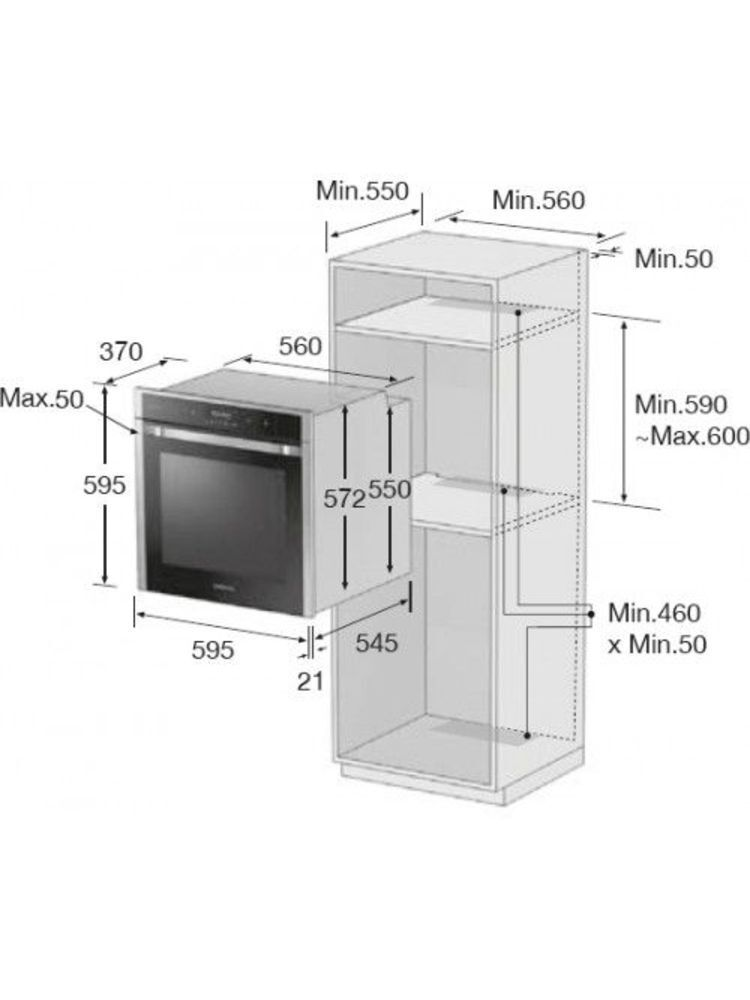
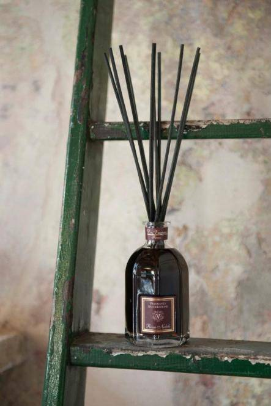

Kaitlentės | AEG
2020.10.29 10:26

Jūsų gaminio registracija Rasti parduotuvę Prisijungti Menu Produktai Atgal
Produktai
Drabužių priežiūra
Džiovyklės Priedai Skalbyklės Skalbyklės su džiovinimuIndų plovimas
Indaplovės PriedaiMaisto gaminimas
Garų rinktuvai Kaitlentės Kompaktiškų įmontuojamų prietaisų asortimentas Mikrobangų krosnelės Orkaitės Pašildymo stalčiai Priedai Vakuumavimo stalčiai ViryklėsPriedai
Drabužių priežiūros priedai Indaplovių priedai Maisto gaminimo priedai Šaldymo priedaiŠaldymas
Šaldikliai Šaldytuvai Šaldytuvai su šaldikliu Įkvėpimas AtgalĮkvėpimas
NAUJŲ SKONIŲ HORIZONTAI
Mėgaukitės tobulais rezultatais kiekviename gaminimo procese.
NEPRIEKAIŠTINGA APSAUGA
Sužinokite kaip dar rūpestingiau prižiūrėti savo drabužius, kad šie tarnautų ilgiau. Naujas požiūris – teigiamiems mados kultūros pokyčiams.
Pagalba Jūsų gaminio registracija Rasti parduotuvę Prisijungti PaieškaKaitlentės
Profesionalų šefų rezultatai Jūsų virtuvėje naudojant AEG kaitlentę, nesvarbu, ar tai būtų dujinė, keraminė, ar indukcinė. AEG indukcinė kaitlentė „MaxiSense®“ su technologija „FlexiBridge“ leidžia pritaikyti maisto gaminimo sritį sujungiant iki 4 segmentų, kuriuose karštis pasiskirsto tolygiai.
Rodyti visas kaitlentes35 iš 35
Kaitlentės
35 iš 35
Filtras Uždaryti 35 iš 35
Filtras Atstatyti paieškąTipas
Dujinė kaitlentė Mišri kaitlentė Indukcinė kaitlentė Elektrinė kaitlentė Kombinuota kaitlentėPlotis, Cm
60 cm 70 cm 80 cm 40 cm„Hob2hood“ Funkcija
Nėra YraValdymo Tipas
Liečiamas valdymas Liečiamas valdymas „DirectTouch“ Rankenėlės TFT liečiamas ekranėlis Žiūrėti pirkimo vadovą Uždaryti Show 1 result Show 35 results Dujinė kaitlentė 60 cm 6000 „Slim“HGB64420SM
Nauja kaitlenčių era Žiūrėti gaminį ComboHob 83 cm Indukcinė viryklė Hob-Hood integruotaIDK84453IB
Žiūrėti gaminį Indukcinė kaitlentė 60 cm su Hob2HoodIKE64441FB
Kontroliuokite kaitlentės konfigūraciją Naudodami kaitlentę „MaxiSense®“, savo prikaistuvius statykite visur Kontroliuokite kvapus virtuvėje nuotoliniu būdu Iš karto įjunkite reikiamą temperatūrą Žiūrėti gaminį Dujinė kaitlentė 60 cm „Gas on Glass“HKB64440NB
IKI 20 % DAUGIAU GALIOS IR SPARTOS PADIDINKITE KARŠTĮ IR AKIMIRKSNIU MĖGAUKITĖS PATIEKALU Patvarus ir itin stabilus Nuvalykite dar gaminant Žiūrėti gaminį Elektrinė kaitlentė 60 cmHK654070XB
Tikslios nuostatos vienu prisilietimu Protingas elektros naudojimas, siekiant sumažinti energijos sąnaudas Optimaliausios maisto ruošimo galimybės su kelių kaitviečių kaitlente Papildomas taupumas naudojant likusį karštį Žiūrėti gaminį ComboHob 83 cm Indukcinė viryklė Hob-Hood integruotaIDE84243IB
Žiūrėti gaminį Dujinė kaitlentė 60 cm Ultraflat lineHGB64301UM
20% daugiau greičio ir galios Nauja kaitlenčių era Žiūrėti gaminį Indukcinė kaitlentė 68 cm su Hob2HoodIKE74471IB
„FlexiBridge“ maksimalioms maisto gaminimo galimybėms Pereikite nuo užvirimo iki lėto virimo, paprasčiausiai stumdami prikaistuvį Iš karto įjunkite reikiamą temperatūrą Kontroliuokite kvapus virtuvėje nuotoliniu būdu Žiūrėti gaminį Elektrinė kaitlentė 29 cm „Domino“ N/AHRB32310NB
Pritaikykite virtuvę pagal savo poreikius Nuvalykite dar gaminant Visiškai saugus vaikams Pristabdykite maisto gaminimą Žiūrėti gaminį Dujinė kaitlentė 60 cm Flame Light su Hob2HoodHKB64540NB
DAUGIAU PASITIKĖJIMO LIEPSNA KARŠČIO INDIKATORIAI SKUBIAM INFORMAVIMUI ĮSPĖJAMASIS GARSO SIGNALAS, JEIGU PALIKTA LIEPSNA SU LAIKMAČIU GALITE GERIAU VALDYTI Žiūrėti gaminį Indukcinė kaitlentė 60 cm su Hob2HoodIKB64413IB
Jūsų tobulas maisto gaminimo partneris Nuvalykite dar gaminant Iš karto įjunkite reikiamą temperatūrą Kontroliuokite kvapus virtuvėje nuotoliniu būdu Žiūrėti gaminį Elektrinė kaitlentė 60 cm N/AHK634021XB
Tikslus šildymo šaltinių valdymas prisilietimu Taupykite laiką, efektyviai naudodami galią Visiškai kontroliuokite maisto gaminimo laiką Kaitlentė, kurios negalima įjungti išdykaujant Žiūrėti gaminį Indukcinė kaitlentė 60 cm su Hob2HoodIKB64301FB
Jūsų tobulas maisto gaminimo partneris Nuvalykite dar gaminant Įvaldykite meniu. Jums po ranka Kontroliuokite kvapus virtuvėje nuotoliniu būdu Žiūrėti gaminį Elektrinė kaitlentė 60 cmHK654070FB
Tikslios nuostatos vienu prisilietimu Protingas elektros naudojimas, siekiant sumažinti energijos sąnaudas Optimaliausios maisto ruošimo galimybės su kelių kaitviečių kaitlente Papildomas taupumas naudojant likusį karštį Žiūrėti gaminį Indukcinė kaitlentė 60 cm su Hob2HoodIAE64413XB
Suvaldykite vandenį. Vienu palietimu Verdantis vanduo kontroliuojamas virimo jutikliu Kontroliuokite kvapus virtuvėje nuotoliniu būdu Iš karto įjunkite reikiamą temperatūrą Žiūrėti gaminį Indukcinė kaitlentė 80 cm su Hob2HoodIAE84851FB
Skrudinkite ir patiekite pagal skonį Rezultatai. Naudojant „SenseFry®“ nereikia spėlioti Vienas jutiklinis ekranas. Visiška gaminimo kontrolė „FlexiBridge“ maksimalioms maisto gaminimo galimybėms Žiūrėti gaminį Indukcinė kaitlentė 29 cm „Domino“ N/AIKB32200NB
Pritaikykite virtuvę pagal savo poreikius Nuvalykite dar gaminant Visiškai saugus vaikams Pristabdykite maisto gaminimą Žiūrėti gaminį Indukcinė kaitlentė 80 cm su Hob2HoodIAE84881FB
Tiksliai išmatuojama vidinė temperatūra Profesionalus maisto tvarkymas. Tiksliai valdoma Vienas jutiklinis ekranas. Visiška gaminimo kontrolė Kontroliuokite kaitlentės konfigūraciją Žiūrėti gaminį Indukcinė kaitlentė 60 cm „SenseFry“ su Hob2HoodIAE64843FB
Skrudinkite ir patiekite pagal skonį Rezultatai. Naudojant „SenseFry®“ nereikia spėlioti Vienas jutiklinis ekranas. Visiška gaminimo kontrolė Kontroliuokite kaitlentės konfigūraciją Žiūrėti gaminį Indukcinė kaitlentė 80 cm su Hob2HoodIPE84531FB
Įsijungia vos palietus Visa kontrolė vienu prisilietimu Prisitaikantis paviršius kiekvienai keptuvei Kontroliuokite kvapus virtuvėje nuotoliniu būdu Žiūrėti gaminį Indukcinė kaitlentė 60 cm su Hob2HoodIKE63441FB
Kontroliuokite kaitlentės konfigūraciją Naudodami kaitlentę „MaxiSense®“, savo prikaistuvius statykite visur Kontroliuokite kvapus virtuvėje nuotoliniu būdu Iš karto įjunkite reikiamą temperatūrą Žiūrėti gaminį Indukcinė kaitlentė 80 cm su Hob2HoodIAE84431FB
Dar daugiau lankstumo virtuvėje, naudojant sritį „MaxiSense®“ Pagaminta pagal skonį. Tolygiai Naudodami kaitlentę „MaxiSense®“, savo prikaistuvius statykite visur Iš karto įjunkite reikiamą temperatūrą Žiūrėti gaminį Indukcinė kaitlentė 60 cm 700 su Hob2HoodIAE64431FB
Dar daugiau lankstumo virtuvėje, naudojant sritį „MaxiSense®“ Pagaminta pagal skonį. Tolygiai Naudodami kaitlentę „MaxiSense®“, savo prikaistuvius statykite visur Iš karto įjunkite reikiamą temperatūrą Žiūrėti gaminį Indukcinė kaitlentė 60 cm su Hob2HoodIKB64301XB
Jūsų tobulas maisto gaminimo partneris Nuvalykite dar gaminant Įvaldykite meniu. Jums po ranka Kontroliuokite kvapus virtuvėje nuotoliniu būdu Žiūrėti gaminį Indukcinė kaitlentė 68 cm su Hob2HoodIKE74451FB
Daugiau vietos. Daugiau skonio. Akimirksniu Naudodami kaitlentę „MaxiSense®“, savo prikaistuvius statykite visur Kontroliuokite kvapus virtuvėje nuotoliniu būdu Iš karto įjunkite reikiamą temperatūrą Žiūrėti gaminį Indukcinė kaitlentė 60 cm su Hob2HoodIKB64413FB
Jūsų tobulas maisto gaminimo partneris Nuvalykite dar gaminant Tiesioginė prieiga prie valdiklių Kontroliuokite kvapus virtuvėje nuotoliniu būdu Žiūrėti gaminį Indukcinė kaitlentė 60 cm su Hob2HoodIKB64431XB
„Maxisense®“ – gerokai daugiau įvairių maisto ruošimo galimybių Kontroliuokite kvapus virtuvėje nuotoliniu būdu Naudodami kaitlentę „MaxiSense®“, savo prikaistuvius statykite visur Iš karto įjunkite reikiamą temperatūrą Žiūrėti gaminį Indukcinė kaitlentė 60 cmIKE64450XB
Daugiau vietos. Daugiau skonio. Akimirksniu Naudodami kaitlentę „MaxiSense®“, savo prikaistuvius statykite visur Iš karto įjunkite reikiamą temperatūrą Nuvalykite dar gaminant Žiūrėti gaminį Indukcinė kaitlentė 68 cm „SenseFry“ su Hob2HoodIAE74841FB
Skrudinkite ir patiekite pagal skonį Rezultatai. Naudojant „SenseFry®“ nereikia spėlioti Vienas jutiklinis ekranas. Visiška gaminimo kontrolė Kontroliuokite kaitlentės konfigūraciją Žiūrėti gaminį Indukcinė kaitlentė 80 cm su Hob2HoodIKE84471XB
„FlexiBridge“ maksimalioms maisto gaminimo galimybėms Pereikite nuo užvirimo iki lėto virimo, paprasčiausiai stumdami prikaistuvį Iš karto įjunkite reikiamą temperatūrą Kontroliuokite kvapus virtuvėje nuotoliniu būdu Žiūrėti gaminį Indukcinė kaitlentė 80 cm su Hob2HoodIAE84411XB
Suvaldykite vandenį. Vienu palietimu Kontroliuokite kvapus virtuvėje nuotoliniu būdu Iš karto įjunkite reikiamą temperatūrą Prisitaikantis paviršius kiekvienai keptuvei Žiūrėti gaminį Indukcinė kaitlentė 68 cm su Hob2HoodIPE74541FB
Įsijungia vos palietus Visa kontrolė vienu prisilietimu Kontroliuokite kaitlentės konfigūraciją Kontroliuokite kvapus virtuvėje nuotoliniu būdu Žiūrėti gaminį Mišri kaitlentė 60 cmHK634150XB
Ir indukcinės, ir kaitrinės kaitvietės Tikslus šildymo šaltinių valdymas prisilietimu Taupykite laiką, efektyviai naudodami galią Įsimena maisto gaminimo pristabdymo momentą Žiūrėti gaminį Indukcinė kaitlentė 60 cm su Hob2HoodIKE64471FB
„FlexiBridge“ maksimalioms maisto gaminimo galimybėms Pereikite nuo užvirimo iki lėto virimo, paprasčiausiai stumdami prikaistuvį Iš karto įjunkite reikiamą temperatūrą Kontroliuokite kvapus virtuvėje nuotoliniu būdu Žiūrėti gaminį Indukcinė kaitlentė 36 cmIKE42640KB
Kontroliuokite kaitlentės konfigūraciją Kontroliuokite kaitlentės konfigūraciją Žiūrėti gaminį Maisto gaminimas Kaitlentės Į puslapio viršųSkonis
Naujų skonių horizontai Skonio mokslas „Mastery“ kolekcija - Indukcinės kaitlentės Garinės orkaitės Gartraukiai Šaldymas Indaplovės Pirkimo vadovai Orkaičių KaitlenčiųPriežiūra
Rūpinkitės daugiau Naujoji drabužių priežiūros linija - Skalbyklės Skalbinių džiovyklės Skalbyklės-džiovyklės Pirkimo vadovai Skalbyklių Skalbinių džiovyklių„AEG Lietuva“
Akcijos Apdovanojimai ReceptaiKlientų aptarnavimas
Rasti parduotuvę Rasti techninio aptarnavimo centrą Atsisiųsti naudojimo instrukcijas Atsisiųsti brošiūras Garantija DUK ArchiveSusisiekite su AEG
Susisiekite su mumis Užregistruokite gaminį AEG Facebook Apie AEG AEG TERMINAI IR SĄLYGOS Data privacy statement„AEG“ svetainės optimizavimui ir reklamos bei rinkodaros tikslams naudoja slapukus ir įvairias stebėjimo technologijas. Jei sutinkate, anoniminiai slapukai naudojami siekiant gerinti mūsų svetainę ir paslaugas. Taip pat naudojamas trečiųjų šalių turinys. Kai kuria informacija, užtikrindami saugumą, galime dalytis su patikimais partneriais. Skiltyje Duomenų privatumo patvirtinimas galite sužinoti daugiau ir bet kada pakeisti nuomonę.
„AEG“ svetainės optimizavimui ir reklamos bei rinkodaros tikslams naudoja slapukus ir įvairias stebėjimo technologijas. Jei sutinkate, anoniminiai slapukai naudojami siekiant gerinti mūsų svetainę ir paslaugas. Taip pat naudojamas trečiųjų šalių turinys. Kai kuria informacija, užtikrindami saugumą, galime dalytis su patikimais partneriais. Skiltyje Duomenų privatumo patvirtinimas galite sužinoti daugiau ir bet kada pakeisti nuomonę.
Back Sutinku Nesutinku
- Kaitlentės | Indukcinės kaitlentės | Dujinės kaitlentės ...
- Kaitlentės gera kaina internetu | pigu.lt
- Elektrinės, Indukcinės KAITLENTĖS pigiau Žema kaina | Varle.lt
- Nešiojamos, laisvai pastatomos kaitlentės | ZEMAKAINA.LT
- Kaitlentės | Senukai.lt
- Elektrinės kaitlentės prijungimas | VilniausMeistrai.lt
- Kaitlentės | AEG
- Kaitlentės - Mixtechnika
- Kaitlentės | imperija.lt
- Kaitlentės | Nemokamas pristatymas - eBIKUVA
- Kaitlentės | Indukcinės kaitlentės | Dujinės kaitlentės ...
ELEKTRINĖS KAITLENTĖS PAJUNGIMAS. Profesionaliai pajungiame įmontuojamas elektrines ir elektrines indukcines kaitlentes prie 220V ir 380V elektros tinklo įvado. DĖMESIO! Pajungdami elektrinį kaitinimo paviršių savarankiškai, rizikuojate nepataisomai sugadinti prietaisą ar sutrikdyti sveikatą. Neteksite gamyklinės prietaiso garantijos.
- Kaitlentės gera kaina internetu | pigu.lt
Kaitlentės tipas: ElektrinisKaitinimo zonų skaičius: 1 vnt.Bendra galia: 1500 WatAukštis: 81 mmPloti.. €30.00. ELDOM PI100 induction cooker. Product colour: WhiteDevice type: HobTop surface material: PVCWidth: 330 mmDepth: 550 mm.. €31.00. PROMIS four-burner gas stove KG400 white ...
- Elektrinės, Indukcinės KAITLENTĖS pigiau Žema kaina | Varle.lt
Kaitlentės kokybiškam maisto gaminimui namuose. Parduodame elektrines ir dujines, šiuolaikiško dizaino kaitlentes. Pažangus funckionalumas leidžia lengvai kontroliuoti maisto gaminimo procesą, kaitlentes paprasta valyti ir prižiūrėti.
- Nešiojamos, laisvai pastatomos kaitlentės | ZEMAKAINA.LT
Kaitlentės. Profesionalų šefų rezultatai Jūsų virtuvėje naudojant AEG kaitlentę, nesvarbu, ar tai būtų dujinė, keraminė, ar indukcinė. AEG indukcinė kaitlentė „MaxiSense®“ su technologija „FlexiBridge“ leidžia pritaikyti maisto gaminimo sritį sujungiant iki 4 segmentų, kuriuose karštis pasiskirsto tolygiai.
- Kaitlentės | Senukai.lt
Kaitlentės tipas yra vienas svarbiausių šio virtuvės įrenginio pasirinkimo kriterijų – mūsų asortimente yra elektrinės kaitlentės, dujinės kaitlentės, įmontuojamos kaitlentės, kombinuotos kaitlentės ir indukcinės kaitlentės. Kaitlentė pateisins visus Jūsų lūkesčius, nes yra galimybė pasirinkti reikalingą kaitviečių ...
- Elektrinės kaitlentės prijungimas | VilniausMeistrai.lt
Domino kaitlentės taip vadinamos dėl savo išskirtinės stačiakampės formos. Vieną greta kito įtaisant kelių skirtingų tipų blokus, galite sudaryti lanksčią ir patogią kaitlentę. Nepamirškite, kad visada prie standartinės kaitlentės gali pridėti vieną domino kaitlentę.
- Kaitlentės | AEG
Kaitlentės internetu: nemokamas pristatymas per 1-2 d.d. prekių grąžinimas per 14 d. 100% saugus pirkimas. Tel.: 8 700 88770
- Kaitlentės - Mixtechnika
Paprastai, kaitlentės turi 2, 3, 4 kaitvietes, kurių dydžiai taip pat skiriasi. Kokio dydžio ir kiek kaitlenčių pasirinksite priklausys nuo jūsų gaminimo įpročių bei turimos erdvės namuose. Juk jeigu namuose praleidžiate mažai laiko, o dar rečiau gaminate, tuomet jums gali užtekti prietaiso su 2 kaitvietėmis.
- Kaitlentės | imperija.lt
Indukcinės kaitlentės yra pranašesnės, nes taupo elektrą, jų paviršius neįkaista, tad šis kaitlenčių tipas yra saugus. Indukcinės kaitlentės nepridega, tad jas prižiūrėti yra gana paprasta. Indukcinei kaitlentei tinka ir nebrangūs puodai ar keptuvės. Indukcinės kaitlentės internetu.
- Kaitlentės | Nemokamas pristatymas - eBIKUVA
Kaitlentės paprastai turi keturias skirtingų dydžių kaitvietes, tačiau yra ir mažoms virtuvėms pritaikytų dviviečių kaitlenčių. Internetinėje parduotuvėje senukai.lt Jūs rasite įvairių tipų kaitlenčių savo namams. Krepšelyje jau yra maksimalus užsakomas prekės kiekis.
ELEKTRINĖS KAITLENTĖS PAJUNGIMAS. Profesionaliai pajungiame įmontuojamas elektrines ir elektrines indukcines kaitlentes prie 220V ir 380V elektros tinklo įvado. DĖMESIO! Pajungdami elektrinį kaitinimo paviršių savarankiškai, rizikuojate nepataisomai sugadinti prietaisą ar sutrikdyti sveikatą. Neteksite gamyklinės prietaiso garantijos.
Kaitlentės tipas: ElektrinisKaitinimo zonų skaičius: 1 vnt.Bendra galia: 1500 WatAukštis: 81 mmPloti.. €30.00. ELDOM PI100 induction cooker. Product colour: WhiteDevice type: HobTop surface material: PVCWidth: 330 mmDepth: 550 mm.. €31.00. PROMIS four-burner gas stove KG400 white ...
Kaitlentės kokybiškam maisto gaminimui namuose. Parduodame elektrines ir dujines, šiuolaikiško dizaino kaitlentes. Pažangus funckionalumas leidžia lengvai kontroliuoti maisto gaminimo procesą, kaitlentes paprasta valyti ir prižiūrėti.
Kaitlentės. Profesionalų šefų rezultatai Jūsų virtuvėje naudojant AEG kaitlentę, nesvarbu, ar tai būtų dujinė, keraminė, ar indukcinė. AEG indukcinė kaitlentė „MaxiSense®“ su technologija „FlexiBridge“ leidžia pritaikyti maisto gaminimo sritį sujungiant iki 4 segmentų, kuriuose karštis pasiskirsto tolygiai.
Kaitlentės tipas yra vienas svarbiausių šio virtuvės įrenginio pasirinkimo kriterijų – mūsų asortimente yra elektrinės kaitlentės, dujinės kaitlentės, įmontuojamos kaitlentės, kombinuotos kaitlentės ir indukcinės kaitlentės. Kaitlentė pateisins visus Jūsų lūkesčius, nes yra galimybė pasirinkti reikalingą kaitviečių ...
Domino kaitlentės taip vadinamos dėl savo išskirtinės stačiakampės formos. Vieną greta kito įtaisant kelių skirtingų tipų blokus, galite sudaryti lanksčią ir patogią kaitlentę. Nepamirškite, kad visada prie standartinės kaitlentės gali pridėti vieną domino kaitlentę.
Kaitlentės internetu: nemokamas pristatymas per 1-2 d.d. prekių grąžinimas per 14 d. 100% saugus pirkimas. Tel.: 8 700 88770
Paprastai, kaitlentės turi 2, 3, 4 kaitvietes, kurių dydžiai taip pat skiriasi. Kokio dydžio ir kiek kaitlenčių pasirinksite priklausys nuo jūsų gaminimo įpročių bei turimos erdvės namuose. Juk jeigu namuose praleidžiate mažai laiko, o dar rečiau gaminate, tuomet jums gali užtekti prietaiso su 2 kaitvietėmis.
Indukcinės kaitlentės yra pranašesnės, nes taupo elektrą, jų paviršius neįkaista, tad šis kaitlenčių tipas yra saugus. Indukcinės kaitlentės nepridega, tad jas prižiūrėti yra gana paprasta. Indukcinei kaitlentei tinka ir nebrangūs puodai ar keptuvės. Indukcinės kaitlentės internetu.
Kaitlentės paprastai turi keturias skirtingų dydžių kaitvietes, tačiau yra ir mažoms virtuvėms pritaikytų dviviečių kaitlenčių. Internetinėje parduotuvėje senukai.lt Jūs rasite įvairių tipų kaitlenčių savo namams. Krepšelyje jau yra maksimalus užsakomas prekės kiekis.
 